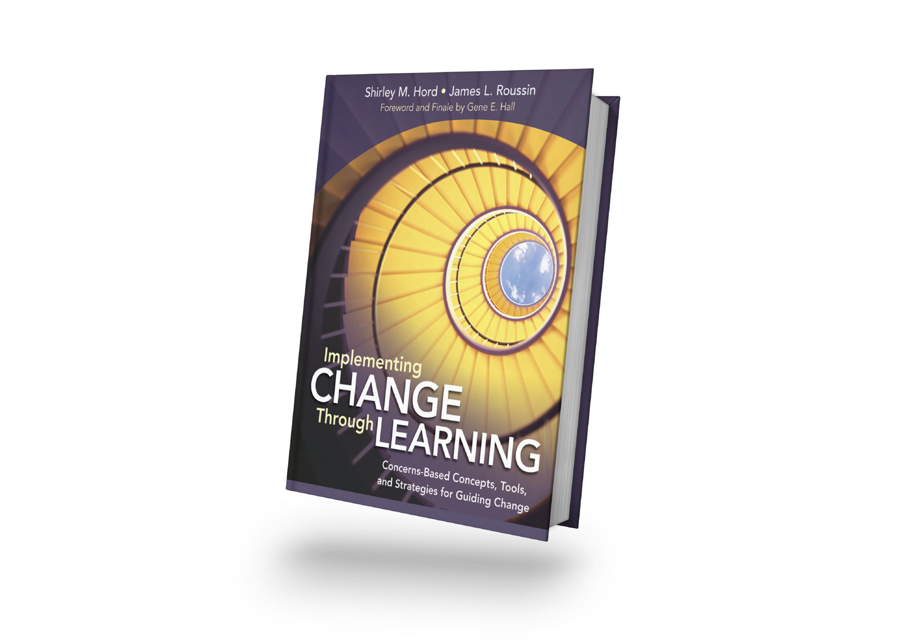

Diane Zimmerman
Diane Zimmerman
Jim Roussin
Robert Garmston
About “Transforming Teamwork”
Discover how psychological safety, constructive
conflict, and actionable learning create a powerful
triple helix to transform teams!
In this ground-breaking resource, three experts in
the field of education and teamwork each present
one of three strands that, when woven together,
support teamwork and forge collaborative
interactions into a transformative way of working.
You’ll learn approaches, processes and tools to
overcome common obstacles to team effectiveness
such as feelings of futility, anxiety, and poor morale.
Drawing on research and practical experience the
authors identify strategies and tools that show how
to:
• Build psychological safety, where teams work
towards resilient interpersonal relationships
• Use constructive conflict as a powerful catalyst for
team learning and transformation
• Inquire into problems of practice to transform
capabilities and produce actionable learning
Book Review
Transforming Teamwork is an intelligent and artfully crafted resource that provides deep insights into team learning. If you study this book as a team, not only will your team transform, your lives will be forever changed. It gets to the core of what it means to be human in relationship with others. Informed by current research from neuroscience, social science, and behavioral and cognitive psychology, Zimmerman, Roussin and Garmston challenge old assumptions, reveal new paradigms, and ultimately bring us to new collaborative actions that have the power to transform organizational cultures and even entire communities. Bravo!
Anne ConzemiusSMART Learning Systems

About “Implementing Change Through Learning”
The definitive guide to implementing change from
the experts who designed CBAM!
The Concerns-Based Adoption Model (CBAM) is one
of the most robust and empirically grounded
frameworks for implementing educational change
ever created. Now you can learn how to use CBAM
to drive successful school improvement from the
experts who created it more than 20 years ago,
Shirley Hord and Gene Hall! The authors share six
strategies for ensuring successful educational
change:
• Create a shared vision of the change
• Plan and identify resources necessary for the
change
• Invest in professional development
• Check or assess progress
• Provide assistance
• Create a context conducive to change
Book Review
Few ideas in education are more fundamental to our understanding of the change process than those described in this book. The Stages of Concern addressing individual’s feelings and perceptions, the Levels of Use describing the gradual development of expertise, and Innovation Configurations that consider the fidelity of innovation implementation, provide the basis for nearly all models of change. Shirley and Jim, who have been a part of this crucial work from the very beginning, present these fundamental elements in a modern context and show how they are just as relevant today as they were when developed nearly four decades ago. It is a “Must Read” for every educational leader who wants to successfully navigate the difficult and complex process of change.
R. Guskey, Professor of EducationalPsychology and Corwin Author
University of Kentucky
About “Guiding Professional Learning Communities”
This research-based sequel to Leading Professional Learning Communities focuses on the practical process of implementing, improving, and sustaining PLCs. Appropriate for groups at all stages of PLC development, this field book helps educators improve PLC operations by facilitating individual and group development and growth. The authors provide learning opportunities that generate conversations about adult learning and contribute to supportive conditions that strengthen teacher quality and raise student outcomes.
Book Review
One weekend morning, I sat down with my cup of coffee to read a book, and much to my delight, two hours later, I had not read a book, but rather mapped out a learning plan for an entire year. The best gift of all, everything I will need is right here in this book. When you sit down to read this book, make sure you have a calendar at your side. Get ready to go on a shopping spree of ideas; like all good shoppers choose wisely, for there is no way you can possibly use all of the ideas in this book in one year. I assure you, you will not have buyer’s remorse!"
Diane Zimmerman, SuperintendentOld Adobe Union School District, Petaluma, CA